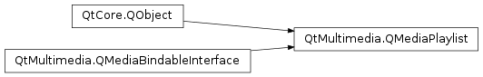

QMediaPlaylist¶
Synopsis¶
Functions¶
- def
addMedia(content) - def
addMedia(items) - def
clear() - def
currentIndex() - def
currentMedia() - def
error() - def
errorString() - def
insertMedia(index, content) - def
insertMedia(index, items) - def
isEmpty() - def
isReadOnly() - def
load(device[, format=nullptr]) - def
load(location[, format=nullptr]) - def
load(request[, format=nullptr]) - def
media(index) - def
mediaCount() - def
moveMedia(from, to) - def
nextIndex([steps=1]) - def
playbackMode() - def
previousIndex([steps=1]) - def
removeMedia(pos) - def
removeMedia(start, end) - def
save(device, format) - def
save(location[, format=nullptr]) - def
setPlaybackMode(mode)
Slots¶
- def
next() - def
previous() - def
setCurrentIndex(index) - def
shuffle()
Signals¶
- def
currentIndexChanged(index) - def
currentMediaChanged(arg__1) - def
loadFailed() - def
loaded() - def
mediaAboutToBeInserted(start, end) - def
mediaAboutToBeRemoved(start, end) - def
mediaChanged(start, end) - def
mediaInserted(start, end) - def
mediaRemoved(start, end) - def
playbackModeChanged(mode)
Detailed Description¶
The
PySide2.QtMultimedia.QMediaPlaylistclass provides a list of media content to play.
PySide2.QtMultimedia.QMediaPlaylistis intended to be used with other media objects, likePySide2.QtMultimedia.QMediaPlayer.
PySide2.QtMultimedia.QMediaPlaylistallows to access the service intrinsic playlist functionality if available, otherwise it provides the local memory playlist implementation.playlist = new QMediaPlaylist; playlist->addMedia(QUrl("http://example.com/movie1.mp4")); playlist->addMedia(QUrl("http://example.com/movie2.mp4")); playlist->addMedia(QUrl("http://example.com/movie3.mp4")); playlist->setCurrentIndex(1); player = new QMediaPlayer; player->setPlaylist(playlist); videoWidget = new QVideoWidget; player->setVideoOutput(videoWidget); videoWidget->show(); player->play();Depending on playlist source implementation, most of the playlist mutating operations can be asynchronous.
See also
-
class
PySide2.QtMultimedia.QMediaPlaylist([parent=nullptr])¶ Parameters: parent – PySide2.QtCore.QObjectCreate a new playlist object with the given
parent.
-
PySide2.QtMultimedia.QMediaPlaylist.PlaybackMode¶ The describes the order items in playlist are played.
Constant Description QMediaPlaylist.CurrentItemOnce The current item is played only once. QMediaPlaylist.CurrentItemInLoop The current item is played repeatedly in a loop. QMediaPlaylist.Sequential Playback starts from the current and moves through each successive item until the last is reached and then stops. The next item is a null item when the last one is currently playing. QMediaPlaylist.Loop Playback restarts at the first item after the last has finished playing. QMediaPlaylist.Random Play items in random order.
-
PySide2.QtMultimedia.QMediaPlaylist.Error¶ This enum describes the
PySide2.QtMultimedia.QMediaPlaylisterror codes.Constant Description QMediaPlaylist.NoError No errors. QMediaPlaylist.FormatError Format error. QMediaPlaylist.FormatNotSupportedError Format not supported. QMediaPlaylist.NetworkError Network error. QMediaPlaylist.AccessDeniedError Access denied error.
-
PySide2.QtMultimedia.QMediaPlaylist.addMedia(content)¶ Parameters: content – PySide2.QtMultimedia.QMediaContentReturn type: PySide2.QtCore.boolAppend the media
contentto the playlist.Returns true if the operation is successful, otherwise returns false.
-
PySide2.QtMultimedia.QMediaPlaylist.addMedia(items) Parameters: items – Return type: PySide2.QtCore.boolAppend multiple media content
itemsto the playlist.Returns true if the operation is successful, otherwise returns false.
-
PySide2.QtMultimedia.QMediaPlaylist.clear()¶ Return type: PySide2.QtCore.boolRemove all the items from the playlist.
Returns true if the operation is successful, otherwise return false.
-
PySide2.QtMultimedia.QMediaPlaylist.currentIndex()¶ Return type: PySide2.QtCore.intReturns position of the current media content in the playlist.
-
PySide2.QtMultimedia.QMediaPlaylist.currentIndexChanged(index)¶ Parameters: index – PySide2.QtCore.int
-
PySide2.QtMultimedia.QMediaPlaylist.currentMedia()¶ Return type: PySide2.QtMultimedia.QMediaContentReturns the current media content.
-
PySide2.QtMultimedia.QMediaPlaylist.currentMediaChanged(arg__1)¶ Parameters: arg__1 – PySide2.QtMultimedia.QMediaContent
-
PySide2.QtMultimedia.QMediaPlaylist.error()¶ Return type: PySide2.QtMultimedia.QMediaPlaylist.ErrorReturns the last error condition.
-
PySide2.QtMultimedia.QMediaPlaylist.errorString()¶ Return type: unicode Returns the string describing the last error condition.
-
PySide2.QtMultimedia.QMediaPlaylist.insertMedia(index, items)¶ Parameters: - index –
PySide2.QtCore.int - items –
Return type: PySide2.QtCore.boolInsert multiple media content
itemsto the playlist at positionpos.Returns true if the operation is successful, otherwise returns false.
- index –
-
PySide2.QtMultimedia.QMediaPlaylist.insertMedia(index, content) Parameters: - index –
PySide2.QtCore.int - content –
PySide2.QtMultimedia.QMediaContent
Return type: PySide2.QtCore.boolInsert the media
contentto the playlist at positionpos.Returns true if the operation is successful, otherwise returns false.
- index –
-
PySide2.QtMultimedia.QMediaPlaylist.isEmpty()¶ Return type: PySide2.QtCore.boolReturns true if the playlist contains no items, otherwise returns false.
-
PySide2.QtMultimedia.QMediaPlaylist.isReadOnly()¶ Return type: PySide2.QtCore.boolReturns true if the playlist can be modified, otherwise returns false.
-
PySide2.QtMultimedia.QMediaPlaylist.load(location[, format=nullptr])¶ Parameters: - location –
PySide2.QtCore.QUrl - format – str
Load playlist from
location. Ifformatis specified, it is used, otherwise format is guessed from location name and data.New items are appended to playlist.
QMediaPlaylist.loaded()signal is emitted if playlist was loaded successfully, otherwise the playlist emitsPySide2.QtMultimedia.QMediaPlaylist.loadFailed().- location –
-
PySide2.QtMultimedia.QMediaPlaylist.load(request[, format=nullptr]) Parameters: - request –
PySide2.QtNetwork.QNetworkRequest - format – str
Load playlist using network
request. Ifformatis specified, it is used, otherwise format is guessed from playlist name and data.New items are appended to playlist.
QMediaPlaylist.loaded()signal is emitted if playlist was loaded successfully, otherwise the playlist emitsPySide2.QtMultimedia.QMediaPlaylist.loadFailed().- request –
-
PySide2.QtMultimedia.QMediaPlaylist.load(device[, format=nullptr]) Parameters: - device –
PySide2.QtCore.QIODevice - format – str
Load playlist from
PySide2.QtCore.QIODevicedevice. Ifformatis specified, it is used, otherwise format is guessed from device data.New items are appended to playlist.
QMediaPlaylist.loaded()signal is emitted if playlist was loaded successfully, otherwise the playlist emitsPySide2.QtMultimedia.QMediaPlaylist.loadFailed().- device –
-
PySide2.QtMultimedia.QMediaPlaylist.loadFailed()¶
-
PySide2.QtMultimedia.QMediaPlaylist.loaded()¶
-
PySide2.QtMultimedia.QMediaPlaylist.media(index)¶ Parameters: index – PySide2.QtCore.intReturn type: PySide2.QtMultimedia.QMediaContentReturns the media content at
indexin the playlist.
-
PySide2.QtMultimedia.QMediaPlaylist.mediaAboutToBeInserted(start, end)¶ Parameters: - start –
PySide2.QtCore.int - end –
PySide2.QtCore.int
- start –
-
PySide2.QtMultimedia.QMediaPlaylist.mediaAboutToBeRemoved(start, end)¶ Parameters: - start –
PySide2.QtCore.int - end –
PySide2.QtCore.int
- start –
-
PySide2.QtMultimedia.QMediaPlaylist.mediaChanged(start, end)¶ Parameters: - start –
PySide2.QtCore.int - end –
PySide2.QtCore.int
- start –
-
PySide2.QtMultimedia.QMediaPlaylist.mediaCount()¶ Return type: PySide2.QtCore.intReturns the number of items in the playlist.
-
PySide2.QtMultimedia.QMediaPlaylist.mediaInserted(start, end)¶ Parameters: - start –
PySide2.QtCore.int - end –
PySide2.QtCore.int
- start –
-
PySide2.QtMultimedia.QMediaPlaylist.mediaRemoved(start, end)¶ Parameters: - start –
PySide2.QtCore.int - end –
PySide2.QtCore.int
- start –
-
PySide2.QtMultimedia.QMediaPlaylist.moveMedia(from, to)¶ Parameters: - from –
PySide2.QtCore.int - to –
PySide2.QtCore.int
Return type: PySide2.QtCore.boolMove the item from position
fromto positionto.Returns true if the operation is successful, otherwise false.
- from –
-
PySide2.QtMultimedia.QMediaPlaylist.next()¶ Advance to the next media content in playlist.
-
PySide2.QtMultimedia.QMediaPlaylist.nextIndex([steps=1])¶ Parameters: steps – PySide2.QtCore.intReturn type: PySide2.QtCore.intReturns the index of the item, which would be current after calling
PySide2.QtMultimedia.QMediaPlaylist.next()stepstimes.Returned value depends on the size of playlist, current position and playback mode.
-
PySide2.QtMultimedia.QMediaPlaylist.playbackMode()¶ Return type: PySide2.QtMultimedia.QMediaPlaylist.PlaybackMode
-
PySide2.QtMultimedia.QMediaPlaylist.playbackModeChanged(mode)¶ Parameters: mode – PySide2.QtMultimedia.QMediaPlaylist.PlaybackMode
-
PySide2.QtMultimedia.QMediaPlaylist.previous()¶ Return to the previous media content in playlist.
-
PySide2.QtMultimedia.QMediaPlaylist.previousIndex([steps=1])¶ Parameters: steps – PySide2.QtCore.intReturn type: PySide2.QtCore.intReturns the index of the item, which would be current after calling
PySide2.QtMultimedia.QMediaPlaylist.previous()stepstimes.
-
PySide2.QtMultimedia.QMediaPlaylist.removeMedia(start, end)¶ Parameters: - start –
PySide2.QtCore.int - end –
PySide2.QtCore.int
Return type: PySide2.QtCore.boolRemove items in the playlist from
starttoendinclusive.Returns true if the operation is successful, otherwise return false.
- start –
-
PySide2.QtMultimedia.QMediaPlaylist.removeMedia(pos) Parameters: pos – PySide2.QtCore.intReturn type: PySide2.QtCore.boolRemove the item from the playlist at position
pos.Returns true if the operation is successful, otherwise return false.
-
PySide2.QtMultimedia.QMediaPlaylist.save(location[, format=nullptr])¶ Parameters: - location –
PySide2.QtCore.QUrl - format – str
Return type: PySide2.QtCore.boolSave playlist to
location. Ifformatis specified, it is used, otherwise format is guessed from location name.Returns true if playlist was saved successfully, otherwise returns false.
- location –
-
PySide2.QtMultimedia.QMediaPlaylist.save(device, format) Parameters: - device –
PySide2.QtCore.QIODevice - format – str
Return type: PySide2.QtCore.boolSave playlist to
PySide2.QtCore.QIODevicedeviceusing formatformat.Returns true if playlist was saved successfully, otherwise returns false.
- device –
-
PySide2.QtMultimedia.QMediaPlaylist.setCurrentIndex(index)¶ Parameters: index – PySide2.QtCore.intActivate media content from playlist at position
playlistPosition.
-
PySide2.QtMultimedia.QMediaPlaylist.setPlaybackMode(mode)¶ Parameters: mode – PySide2.QtMultimedia.QMediaPlaylist.PlaybackMode
-
PySide2.QtMultimedia.QMediaPlaylist.shuffle()¶ Shuffle items in the playlist.
© 2018 The Qt Company Ltd. Documentation contributions included herein are the copyrights of their respective owners. The documentation provided herein is licensed under the terms of the GNU Free Documentation License version 1.3 as published by the Free Software Foundation. Qt and respective logos are trademarks of The Qt Company Ltd. in Finland and/or other countries worldwide. All other trademarks are property of their respective owners.